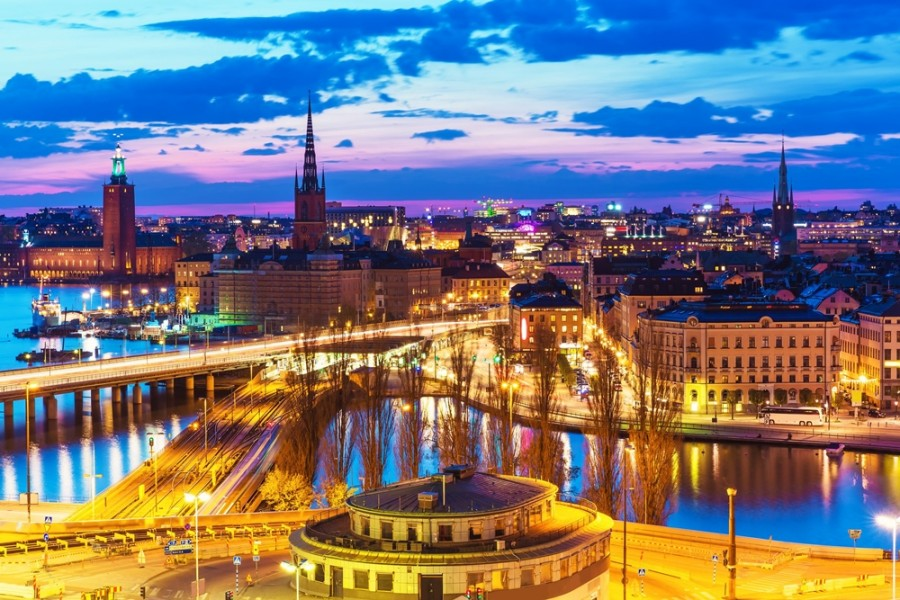
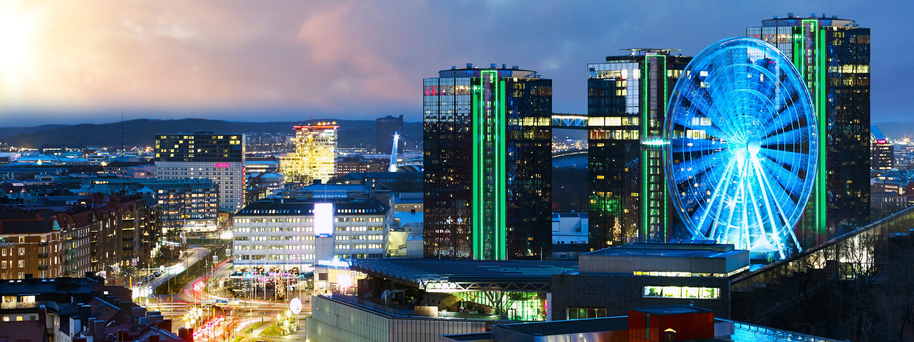

Sweden's biggest cities
Sweden's biggest cities are Stockholm, Gothenburg(Göteborg) and Malmö
Sweden (Swedish: Sverige), officially the Kingdom of Sweden, is a Scandinavian country in Northern Europe. It borders Norway to the west and north and Finland to the east, and is connected to Denmark in the southwest by a bridge-tunnel across the Öresund, a strait at the Swedish-Danish border. At 450,295 square kilometres (173,860 sq mi), Sweden is the third-largest country in the European Union by area. Sweden has a total population of 10.2 million[3] of which 2.4 million has a foreign background.[12] It has a low population density of 22 inhabitants per square kilometre (57/sq mi). The highest concentration is in the southern half of the country.
Stockholm
Stockholm is the capital of Sweden and the most populous city in the Nordic countries;[ 952,058 people live in the municipality, approximately 1.5 million in the urban area, and 2.3 million in the metropolitan area. The city stretches across fourteen islands where Lake Mälaren flows into the Baltic Sea. Just outside the city and along the coast is the island chain of the Stockholm archipelago. The area has been settled since the Stone Age, in the 6th millennium BC, and was founded as a city in 1252 by Swedish statesman Birger Jarl. It is also the capital of Stockholm County. Stockholm is the only capital in the world with a national urban park.
Stockholm is the cultural, media, political, and economic centre of Sweden. The Stockholm region alone accounts for over a third of the country's GDP,and is among the top 10 regions in Europe by GDP per capita.[14] It is an important global city,land the main centre for corporate headquarters in the Nordic region. The city is home to some of Europe's top ranking universities, such as the Stockholm School of Economics, Karolinska Institute and Royal Institute of Technology (KTH). It hosts the annual Nobel Prize ceremonies and banquet at the Stockholm Concert Hall and Stockholm City Hall. One of the city's most prized museums, the Vasa Museum, is the most visited non-art museum in Scandinavia. The Stockholm metro, opened in 1950, is well known for the decor of its stations; it has been called the longest art gallery in the world. Sweden's national football arena is located north of the city centre, in Solna. Ericsson Globe, the national indoor arena, is in the southern part of the city. The city was the host of the 1912 Summer Olympics, and hosted the equestrian portion of the 1956 Summer Olympics otherwise held in Melbourne, Victoria, Australia.
Stockholm is the seat of the Swedish government and most of its agencies,[25] including the highest courts in the judiciary,[26][27] and the official residencies of the Swedish monarch and the Prime Minister. The government has its seat in the Rosenbad building, the Riksdag (Swedish parliament) is seated in the Parliament House, and the Prime Minister's residence is adjacent at the Sager House.The Stockholm Palace is the official residence and principal workplace of the Swedish monarch, while the Drottningholm Palace, a World Heritage Site on the outskirts of Stockholm, serves as the Royal Family's private residence.
Gothenburg
Gothenburg (Swedish: Göteborg) is the second-largest city in Sweden and the fifth-largest in the Nordic countries. It is situated by Kattegat, on the west coast of Sweden, and has a population of approximately 570,000 in the city center and about 1 million inhabitants in the metropolitan area.
Gothenburg was founded as a heavily fortified, primarily Dutch, trading colony, by royal charter in 1621 by King Gustavus Adolphus. In addition to the generous privileges (e.g. tax relaxation) given to his Dutch allies from the then-ongoing Thirty Years' War, the king also attracted significant numbers of his German and Scottish allies to populate his only town on the western coast. At a key strategic location at the mouth of the Göta älv, where Scandinavia's largest drainage basin enters the sea, the Port of Gothenburg is now the largest port in the Nordic countries. Gothenburg is home to many students, as the city includes the University of Gothenburg and Chalmers University of Technology. Volvo was founded in Gothenburg in 1927.The original parent Volvo Group and the now separate Volvo Car Corporation are still headquartered on the island of Hisingen in the city. Other key companies are SKF and Astra Zeneca. Gothenburg is served by Göteborg Landvetter Airport 30 km (19 mi) southeast of the city center. The smaller Göteborg City Airport, 15 km (9.3 miles) from the city center, was closed to regular airline traffic in 2015. The city hosts some of the largest annual events in Scandinavia. The Gothenburg Film Festival, held in January since 1979, is the leading Scandinavian film festival with over 155,000 visitors each year. In summer, a wide variety of music festivals are held in the city, such as Way Out West and Metaltown.
Malmö

Malmö is the largest city of the Swedish county of Skåne County. The metropolis is a gamma world city (as listed by the GaWC), the third-largest city in Sweden, after Stockholm and Gothenburg, and the sixth-largest city in Scandinavia, with a population of above 300,000. The Malmö Metropolitan Region is home to 700,000 people, and the Øresund Region, which includes Malmö, is home to 3.9 million people.
Malmö was one of the earliest and most industrialized towns of Scandinavia, but it struggled with the adaptation to post-industrialism. Since the construction of the Øresund Bridge, Malmö has undergone a major transformation with architectural developments, and it has attracted new biotech and IT companies, and particularly students through Malmö University, founded in 1998. The city contains many historic buildings and parks, and is also a commercial centre for the western part of Scania.